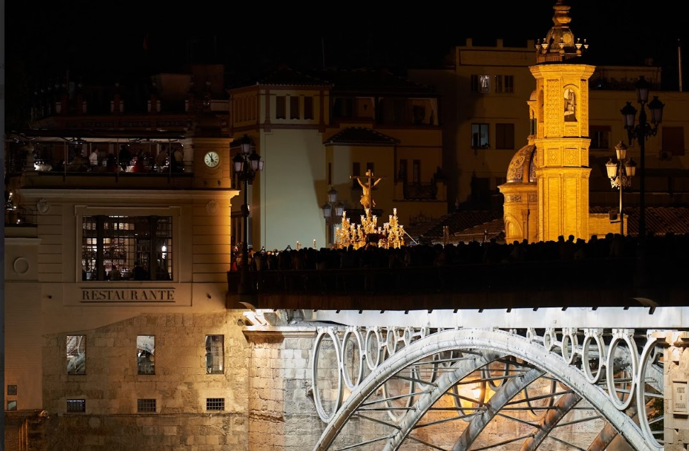
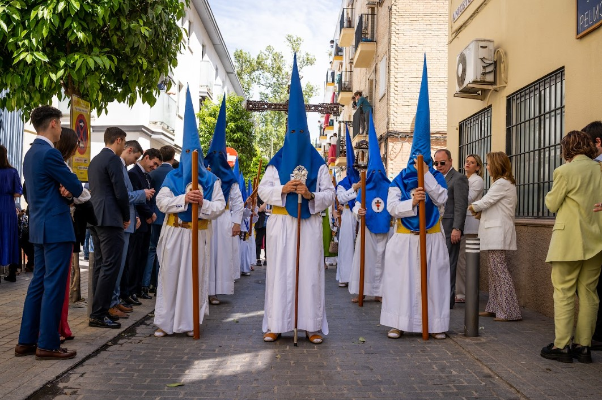

¡Felicidades!
La Semana Santa en Sevilla es una fiesta popular, en la que el arte y la fe lucen esplendorosos por las calles de la ciudad hispalense. 72 hermandades recorren Sevilla de viernes a domingo, mostrando la belleza de las imágenes, que cuentan con una historia y tradición memorable.
Es un espectáculo singular, que hay que vivir para entender.
 |
 |
Algunas curiosidades de la Semana Santa de Sevilla:
- El capirote quiere simular un acercamiento del nazareno con el cielo, a través de la forma cilíndrica y puntiaguda.
- La Hermandad de los Gitanos tiene estipulado que su Hermano Mayor debe ser de etnia gitana.
- La Virgen del Patrocinio lleva en su interior restos de las cenizas de la que fuera la talla original hasta los 70.
- La Virgen de las Mercedes del Tiro de Línea tiene en sus varales esculpidos los escudos del Betis y del Sevilla.